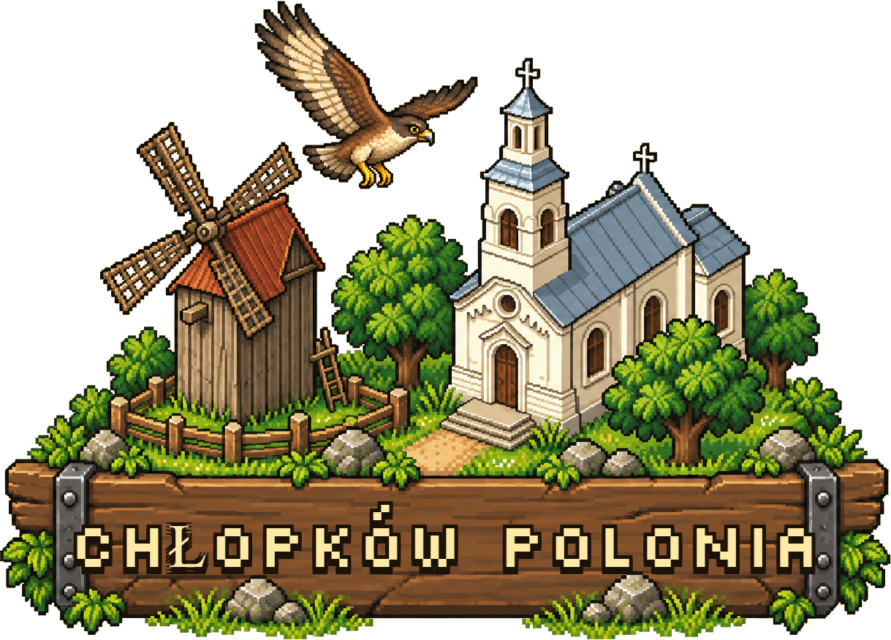
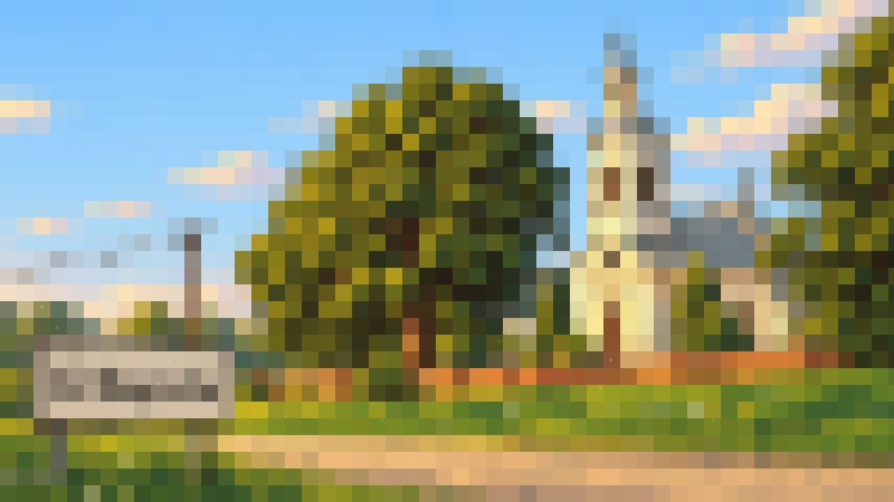
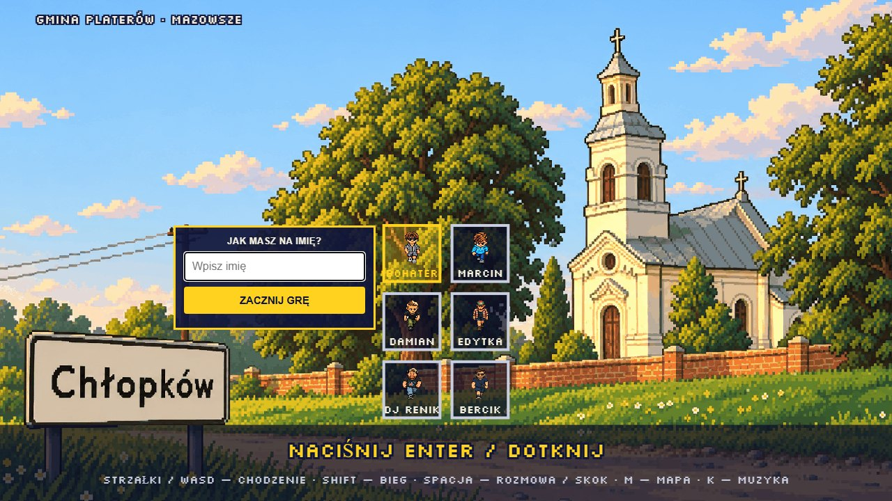
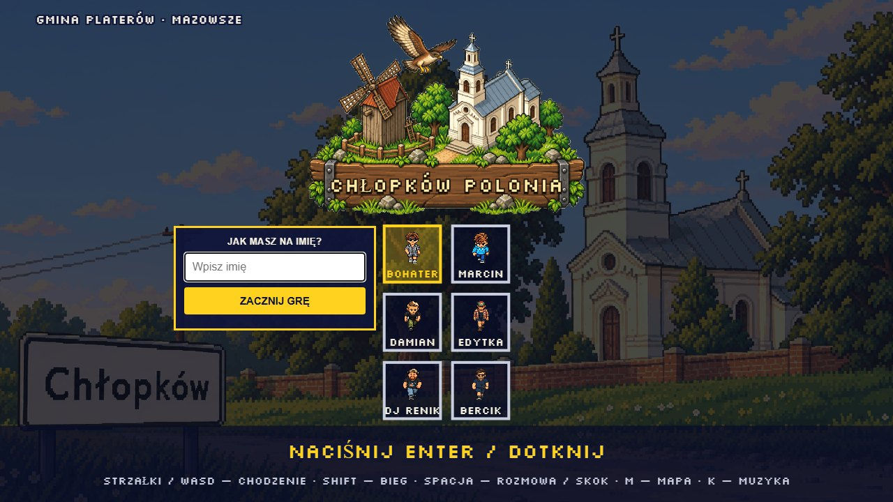

How the village sign, the wordmark and the opening screen of the game fit together, and how to use them without breaking the pixel-art world they come from.
The mark is a signboard that could stand at the edge of Chłopków. Every part comes from the game world; nothing is borrowed from a football crest, a coat of arms or a stock icon set.
Original, loosely nodding to the local Sokół idea. A calm glide, not an attack pose. It must never be swapped for an existing club or national emblem.
The actual windmill from the game (gen/lm_windmill.png), with sails clearly readable so it never turns into a barn.
The actual church (gen/lm_church.png): cream walls, slate roof, tower and cross. The centre of the village, so the centre of the sign.
Weathered oak with iron brackets, the one place text lives. The wordmark is typeset, never generated.
Set in Silkscreen, the pixel font the game already uses everywhere, in capitals, on one line. Silkscreen draws the Polish letters correctly, which is why the text is always real text.
Generated images garble Ł, Ó and Ą. Draw the illustration without letters, then add the words with the font.
The game is CHŁOPKÓW POLONIA. The older name survives only in the repository address and internal save keys.
Dark 1-step outline and drop, never a soft glow or blur. It is the same treatment as the in-game titles.
The sign uses the village's own palette. Gold is the only bright accent, reserved for the active choice and the call to act. Click a swatch to copy its hex.
Full sign on the opening screen, the README and the share card. It does not float over the playing field, where the HUD and the map already compete for space.
favicon-polonia.png, no plank).The opening is three beats, all cosmetic. The picker and the name field are usable the moment they appear, nothing starts the game by itself, and reduced-motion visitors get the final state straight away.



Short list, because the art does most of the work.
All files live in docs/img/ and are rebuilt by python gen/brand/build_brand_assets.py from gen/brand/emblem-source.png.
| File | What it is | Used for |
|---|---|---|
chlopkow-polonia-logo.png | Full sign with the typeset wordmark, transparent | Opening screen, README, this guide |
chlopkow-polonia-emblem.png | Sign without any text, transparent | Re-lettering, other languages |
favicon-polonia.png | 128 px crop: church, windmill, falcon | Browser tab |
og-polonia.png | 1200 × 630 share card on the dimmed village | Link previews |